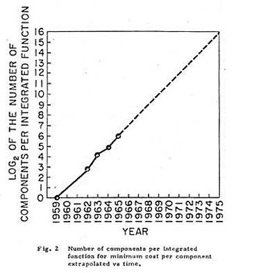

Então eu olhei o que estávamos fazendo nos circuitos integrados naquela época, e fizemos alguns circuitos e conseguimos até 30 circuitos nos chips mais complexos que estavam lá no laboratório, trabalhamos com cerca de 60 e eu olhei e disse caramba de fato dos dias do transistor planar original, de 1959, tínhamos dobrado a cada ano a quantidade de componentes que poderíamos colocar em um chip.
Então peguei esses primeiros pontos, até 60 componentes em um chip em 1965 e extrapolei cegamente por cerca de 10 anos e disse que sim, em 1975 teremos cerca de 60 mil componentes em um chip.
Agora, o que eu estava tentando fazer era promover a ideia de que era assim que a eletrônica se tornaria barata. Não era verdade para os primeiros circuitos integrados, eles custam mais do que os bits e peças que você pode usar para montá-los, mas de onde eu estava no laboratório, você podia ver as mudanças que estavam chegando, fazer os rendimentos subir e reduzir o custo por transistores dramaticamente.
Eu não tinha ideia de que isso seria uma previsão precisa, mas surpreendentemente, em vez de dobrar 10, obtivemos 9 ao longo dos 10 anos, mas ainda seguimos muito bem ao longo da curva. E um dos meus amigos, o Dr. Carver Mead, professor da Cal Tech, apelidou-a como Lei de Moore.

Gráfico da Lei de Moore (1965)
Então, a original estava dobrando em complexidade a cada ano e já em 1975, tive que voltar e revisitar isso... e notei que estávamos perdendo um dos fatores-chave que nos permitem manter esta notável taxa de progresso... e isso era algo que estava contribuindo com a metade dos avanços estavam fazendo.{kind=link}
Gráfico da Lei de Moore (1965)
Então, eu mudei isso para olhar mais para a frente, nós só estaríamos dobrando a cada dois anos, e essas foram realmente as duas previsões que fiz. Agora, o que é citado é que está dobrando a cada 18 meses... Eu acho que era Dave House, que costumava trabalhar aqui na Intel que fez isso, ele decidiu que como a complexidade estava dobrando a cada dois anos e os transistores estavam ficando mais rápidos, este desempenho do computador iria dobrar a cada 18 meses... mas é isso o que ficou no site da Intel... e todos demais. Eu nunca disse 18 meses, como é frequentemente citado.
28/Fev/2018 10:59:05